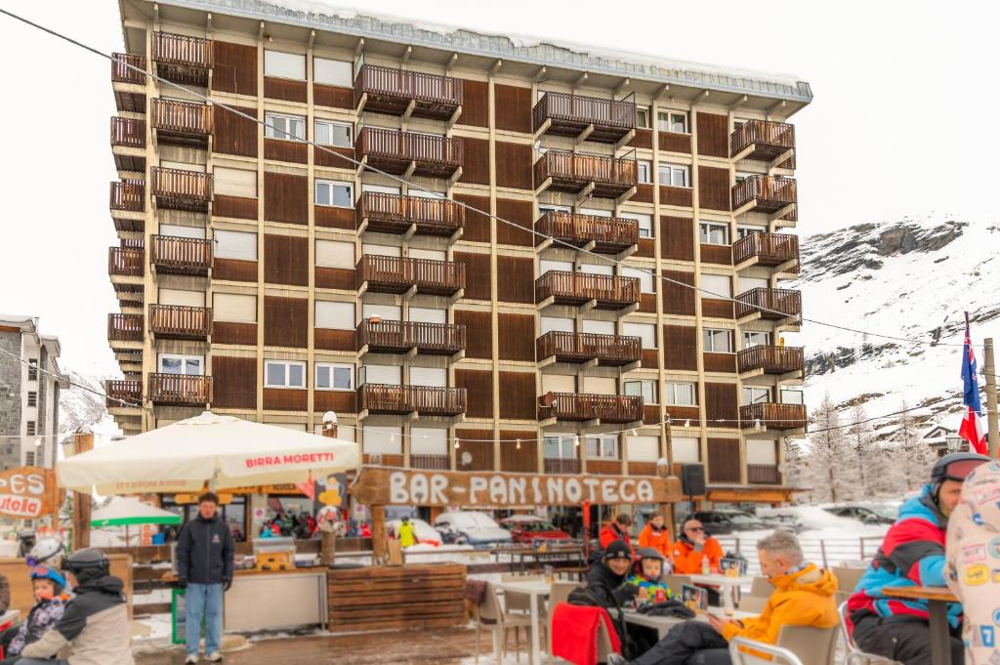
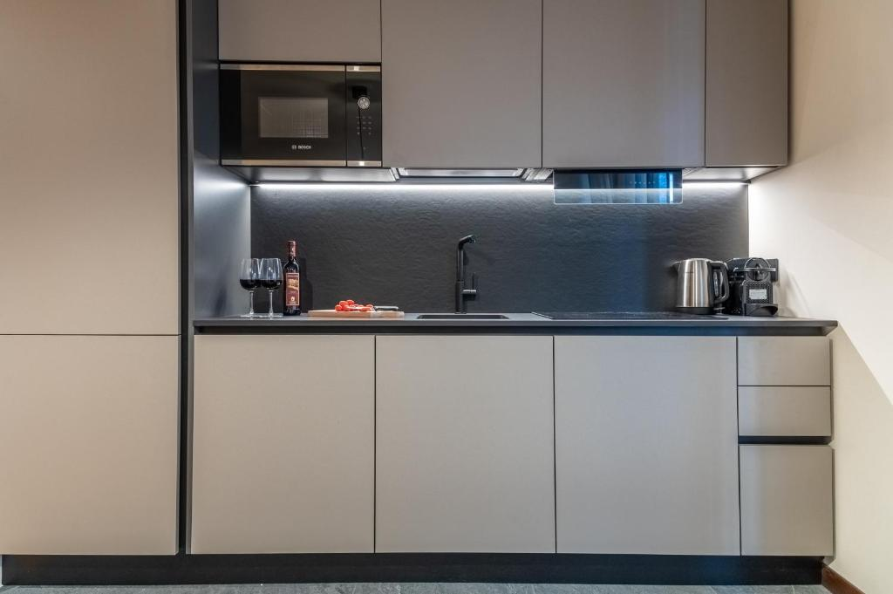

🏨 Hotel Fortini · Madonna di Campiglio
40 מ׳ מ-Fortini Express · Skiarea ~155 ק״מ
אישור Booking: 6480885121
ביטול חינם עד ~2.2.2027 · מלפנסה ~264 ק״מ (~3:40 ש׳)
🏠 HelloCHALET · Breuil-Cervinia
Ski-in/ski-out · 157 ק״מ (352 עם צרמט)
אישור Booking: 6969036688
ביטול חינם עד 7.1.2027 23:59 · מלפנסה ~181 ק״מ (~2:20 ש׳)
🏔️ Mountain Hideaway · Val Thorens
Ski-in/ski-out · 3 Vallées 600 ק״מ
אישור Booking: 6594931305
ביטול חינם עד 30.1.2027 23:59 · טיסות לז׳נבה – טרם נקבע · GVA ~2:45 ש׳
⚠️ הרכב בהזמנה: 3 מבוגרים + 2 ילדים – לתקן
👨👩👧👦 המשפחה
אילון ושרון, יהלי (21), מאיה (18), עמרי (15), בר (11)כולם ברמה בינונית (כחול/אדום)
🏂 בר רוצה ללמוד סנובורד
✈️ טיסות אל על · XBFIJ2
הלוך: LY381 · א׳ 7.2 · TLV 06:25 → MXP 09:45חזור: LY382 · ו׳ 12.2 · MXP 09:45 → TLV 14:35
6 נוסעים · אקונומי קלאסיק · מזוודה לכל אחד
ביטול עצמי בפורטל הצוות עד ~31.1 06:25 (בטוח: 30.1)
🚗 רכב · 750909865
Italy Car Rent · VW T-Roc אוטומטית + שרשראותמלפנסה, 7.2 11:30 → 12.2 11:30
$227.71 כולל הגנה מלאה
⚠️ שעת ההחזרה (11:30) מאוחרת מהטיסה (09:45) – צריך לשנות
📋 כל ההזמנות
| מה | אישור | תאריכים | סכום | ביטול חינם עד | סטטוס |
|---|---|---|---|---|---|
| ✈️ טיסות אל על LY381/LY382 (6 נוסעים) | XBFIJ2 | 7.2 / 12.2.2027 | כרטיסי הטבת צוות | ~31.1.2027 06:25 (בטוח: 30.1) | פעיל |
| 🏨 Hotel Fortini (A) | 6480885121 | 7–12.2.2027 | €3,784.14 | ~2.2.2027 | פעיל · להחלטה |
| 🏠 HelloCHALET Cervinia (B) | 6969036688 | 7–12.2.2027 | €3,658 (€0 עד 5.1) | 7.1.2027 23:59 | פעיל · להחלטה |
| 🚗 Italy Car Rent · VW T-Roc | 750909865 | 7.2 11:30 – 12.2 11:30 | $227.71 | לפני 5.2.2027 (~12:29 שעון ישראל) | פעיל שעת החזרה לשינוי |
| 🏔️ Mountain Hideaway · Val Thorens (C) | 6594931305 | 7–12.2.2027 | €3,959.32 (חיוב ~29.1, לפי הדף – לאמת) | 30.1.2027 23:59 | פעיל · להחלטה הרכב האורחים לתיקון |
| 🚗 רכב בז׳נבה (C) | — | 7–12.2.2027 | — | — | בחיפוש · צד צרפתי (GGV) · טרם הוזמן |
| HelloCHALET (מרץ, טעות) | 6100201391 | 7–12.3.2027 | — | — | בוטל בחינם |
| רכב (מרץ, טעות) | 762317234 | מרץ 2027 | החזר ₪649.66 | — | בוטל |
אין הזמנות פעילות במרץ 2027.
🗓️ ציר זמן להחלטה
- 3.1.2027 🔔 תזכורת: החלטה פורטיני / צ׳רביניה / ואל טורנס
- 5.1.2027 B Booking מחייב €3,598 אוטומטית ל-Mastercard ••8135
- 7.1.2027 23:59 B מועד אחרון לביטול חינם של צ׳רביניה (מ-8.1 ביטול עולה כ-US$3,742)
- 24.1.2027 🔔 תזכורת: מועד ביטול הטיסות מתקרב
- 29.1.2027 🔔 תזכורת אחרונה לפני מועד ביטול הטיסות
- ~29.1.2027 C חיוב צפוי של ואל טורנס (€3,959.32) – לפי דף הנכס, לאמת
- 30.1.2027 ✈️ מועד בטוח לביטול עצמי של הטיסות (בפועל עד ~31.1 06:25 שעון ישראל – 7 ימים לפני ההמראה). אחרי זה רק דרך וואטסאפ, החזר מסים בשובר בלבד וללא החזר נקודות
- 30.1.2027 23:59 C מועד אחרון לביטול חינם של ואל טורנס (מ-31.1 00:00 דמי ביטול = המחיר המלא) · חל באותו יום כמו מועד הביטול העצמי הבטוח של טיסות אל על
- ~31.1.2027 B הנכס גובה פיקדון נזקים €500 (מוחזר) – רק אם נשארים בצ׳רביניה
- ~2.2.2027 A מועד אחרון לביטול חינם של Fortini
- 5.2.2027 ~12:29 🚗 מועד אחרון לביטול חינם של הרכב (05:29 שעון אינדיאנפוליס)
- 7.2.2027 ✈️ LY381 06:25 → נחיתה במלפנסה 09:45 · 🚗 איסוף רכב 11:30 · צ׳ק-אין (B: 16:00–20:00)
- 12.2.2027 🚗 החזרת רכב (צריך עד ~07:00 – ראו לשונית רכב) · ✈️ LY382 09:45 → TLV 14:35
🧾 ההזמנה
אל על · קוד הזמנה XBFIJ26 נוסעים, כולם באותן טיסות
אקונומי קלאסיק · מזוודה רשומה אחת לכל נוסע
כרטיסי הטבת צוות (El Al staff)
כרטיס של אילון: 1142496552302
🛫 הלוך · LY381 · א׳ 7.2.2027
מושב אילון: 27A · איסוף הרכב 11:30 – כשעה וחצי אחרי הנחיתה ✔️
🛬 חזור · LY382 · ו׳ 12.2.2027
מושב אילון: 41K · הרכב רשום להחזרה ב-11:30 – צריך להקדים
↩️ מדיניות ביטול (טבלת הטבות צוות אל על)
מהרכישה ועד 7 ימים לפני הטיסה
• ביטול עצמי בפורטל הצוות (אזור כרטיסי צוות)• מסים ואגרות מוחזרים בכסף/שובר
• הנקודות מוחזרות (תוך כשעתיים)
מועד: עד ~31.1.2027 06:25 שעון ישראל · בטוח: 30.1.2027
בתוך 7 ימים לפני הטיסה
• אי אפשר לבטל לבד – רק דרך שירותי נסיעות צוות בוואטסאפ• מסים מוחזרים כשובר בלבד
• ללא החזר נקודות
🔔 תזכורות
• 3.1.2027 – החלטה על המלון• 24.1.2027 – מועד ביטול הטיסות מתקרב
• 29.1.2027 – תזכורת אחרונה לפני מועד ביטול הטיסות
🏨 המלון
Hotel FortiniVia Cima Tosa 25, Campo Carlo Magno
ציון Booking: 8.7 (972 ביקורות) · מיקום 9.1
דף המלון ב-Booking
🧾 ההזמנה · 6480885121
7–12.2.2027 · 5 לילותחדר לארבעה + חדר זוגי/טווין · ארוחת בוקר כלולה
סה״כ €3,784.14 (כולל ~€50 מס עיר שמשולם במלון)
ביטול חינם עד ~2.2.2027
🚡 מעליות קרובות (לפי Booking)
| Fortini Express | 40 מ׳ |
| Grostè 1 Express (גונדולה) | 250 מ׳ |
| Pradalago Express | 1.4 ק״מ |
🚗 ממלפנסה
~264 ק״מ · ~3:40 ש׳ (OSRM, ללא פקקים ושלג)ורונה הייתה קרובה יותר (~2.5 ש׳), אבל הטיסות והרכב במלפנסה.
מסלול בגוגל מפות
🗺️ מפה
⚠️ המיקומים על המפה משוערים (לפי מיקום כללי, לא כתובות מדויקות), למעט האזור הכללי של המלון. מפה: © OpenStreetMap.
חלוקה לפי צבע
3 אזורים, סקיפס אחד
Madonna di Campiglio מחוברת בסקי ל-Pinzolo (ואל רנדנה) ול-Folgarida-Marilleva (ואל די סולה). הסקיפס של Skiarea כולל גם את Pejo (לא מחובר בסקי).חסרונות לפי skiresort.info: חלק מהחניות בתשלום, אין מסלולי עמק ל-Pinzolo, Daolasa ו-Marilleva 900.
🗺️ מפת המסלולים

⛷️ מסלולים מומלצים למשפחה (כחול/אדום)
הנתונים (אורך/הפרש גובה) מתוך רשימת המסלולים הרשמית ב-ski.it. הבחירה היא המלצה לפי צבע ומיקום; כדאי לאמת על המפה.
| מסלול | צבע | אורך | הפרש | הערה |
|---|---|---|---|---|
| Malga Zeledria – Fortini | כחול | 1,360 מ׳ | 147 מ׳ | מסתיים ליד המלון – חימום מושלם |
| Pradalago easy | כחול | 3,740 מ׳ | 460 מ׳ | ארוך ונוף לברנטה (skiresort ממליץ) |
| Zeledria | כחול | 1,310 מ׳ | 165 מ׳ | אזור Campo Carlo Magno |
| Skiweg Campiglio | כחול | 2,200 מ׳ | 240 מ׳ | חיבור לכפר |
| Belvedere | כחול | 1,160 מ׳ | 195 מ׳ | |
| Nube d'argento | כחול | 1,280 מ׳ | 200 מ׳ | |
| Genziana | אדום | 1,780 מ׳ | 360 מ׳ | |
| Fiocco di neve | אדום | 1,480 מ׳ | 230 מ׳ | |
| Rododendro (Pinzolo) | אדום | 3,100 מ׳ | 600 מ׳ | יום טיול לפינצולו |
🖤 לא למשפחה ברמה בינונית: 3-Tre / Canalone Miramonti (מסלול גביע העולם), Spinale direttissima (שחור, 2,400 מ׳), Amazzonia (שחור).
🎟️ מחירי סקיפס 2026/27 (Skiarea, מחירון רשמי)
| תעריף | מבוגר | ג׳וניור | ילד |
|---|---|---|---|
| יום 1 · נמוכה | €75 | €53 | €38 |
| יום 1 · גבוהה | €87 | €61 | €44 |
| 5 ימים · נמוכה | €331 | €232 | €166 |
| 5 ימים · גבוהה | €383 | €268 | €192 |
גבולות הגיל לג׳וניור/ילד והנחות משפחתיות: לא אומתו – מופיעים במחירון. המחיר הזול ביותר לרוב באונליין. 💡 עם טיסה חזרה ב-12.2 בבוקר יוצאים 4 ימי סקי מלאים (8–11.2), כך שכנראה מספיק פס של 4 ימים (מחיר 4 ימים לא מופיע כאן – לבדוק במחירון).
🏂 סנופארק בשביל בר
שני בתי הספר שאומתו הם בקרבת המלון/הגרוסטה. יש בעיירה עוד בתי ספר – רשימה מלאה באתר התיירות.
🏫 Scuola Italiana Sci Campo Carlo Magno (CCM)
• כ-60 מדריכים, קורסים קבוצתיים ופרטיים לכל הרמות.
• סנובורד מתחילים לילדים: 11:00–12:50, עד 6 תלמידים, מינימום 3 ימים, מתחיל בראשון או שני.
• קבוצות סנובורד לגילאי 8+ · מציעים גם השכרה (CCM Rent).
• מחיר: לא מצאתי מחיר מפורסם – לשאול.
🦓 Scuola di Snowboard Zebra
• מפגש: Rifugio Boch בתחנת האמצע של הגרוסטה; מתחילים לומדים בשטח מסודר שם ואז מסלולים כחולים.
• מחיר: €170–€270 לאדם (לפי checkyeti, עונת 2026/27).
• השכרה ב-Zebra Shop. צריך סקיפס מהיום הראשון.
💡 המלצה לבר
מקורות: Scatti di Gusto (2023, עודכן 2024) · graffer.com · Stoppani · campigliodolomiti.it. מחירים מ-2023 – כנראה עלו.
מיקום 9.1
על Fortini (Booking)
"Fantastic location ski in ski out, staff very helpful… Easy access to lifts"
"The position of the Hotel is perfect, ski to door Hotel. Second year at this Hotel"
"Great location next to the ski lift. Modern and comfortable rooms"
"Great location next to the telecabine, amazing breakfast"
"A bit noisy in the evening if your room is above the bar"
"right by a ski lift and main road"
על אזור הסקי
השוואת מקורות – פברואר, אזור העיירה (~1,520 מ׳)
weatherapi · weather-atlas · easeweather · weather-and-climate (נתונים מטרנטו!)
🚗 נסיעה
ממלפנסה (שם הטיסות והרכב): ~264 ק״מ, ~3:40 ש׳ ללא פקקים ושלג (OSRM).לידיעה – מהדשבורד המקורי: ורונה כ-2.5 ש׳ (A22 צפונה לטרנטו, ואל רנדנה/פינצולו); ברגמו ~2.5–3 ש׳; אינסברוק ~3 ש׳.
Campo Carlo Magno נמצא כ-2 ק״מ מעל העיירה. הרכב מגיע עם שרשראות.
מסלול ממלפנסה🅿️ במלון
• חניה €10 ליום• אחסון סקי במקום
• השכרת ציוד ובית ספר לסקי בסמוך
• ~2 ק״מ למרכז (2 דק׳ ברכב / 10–20 דק׳ הליכה), יש שאטל
📞 חשוב
• חירום: 112• מצב מעליות: ski.it
• ביטול חינם עד ~2.2.2027
• לרשום שם אורח בחדר לארבעה
• מס עיר (~€50) וחניה – לשלם במלון
🏠 הדירה
HelloCHALET – Front Row with balcony overlooking the Cretaz slopesVia J. B. Bich 16, 11021 Breuil-Cervinia
ציון Booking: 10 (2 ביקורות בלבד)
☎ +39 327 611 4775 · מנוהל ע״י HelloCHALET
דף הנכס ב-Booking
🧾 ההזמנה · 6969036688
One-Bedroom Apartment with Balcony · ללא ארוחות6 אורחים (4 מבוגרים + 2 ילדים)
סה״כ €3,658 (כ-US$4,089, כולל מע״מ, דמי שירות €250 ומס עיר)
היום: €0 · Booking יחייב €3,598 אוטומטית ב-5.1.2027 (Mastercard ••8135)
ביטול חינם עד 7.1.2027 23:59 · פיקדון €500 מוחזר נגבה 7 ימים לפני ההגעה
🕓 צ׳ק-אין / צ׳ק-אאוט
צ׳ק-אין: א׳ 7.2.2027, 16:00–20:00הגעה 20:00–01:00 – בתוספת תשלום
צ׳ק-אאוט: ו׳ 12.2.2027, 08:00–10:00 – אבל צריך לצאת בסביבות 04:30 לטיסה; לתאם יציאה מוקדמת/השארת מפתח
בצ׳ק-אין: תעודה מזהה + כרטיס אשראי
🚗 ממלפנסה
~181 ק״מ · ~2:20 ש׳ (OSRM)נחיתה 09:45 → רכב 11:30 → הגעה משוערת ~14:00, לפני הצ׳ק-אין (16:00). זמן לקניות בדרך.
מסלול ממלפנסה
📸 תמונות




תמונות: Booking.com
💶 פירוט עלות (לפי Booking, בדולרים, משוער)
| דירה (5 לילות) | ~$3,403 |
| מע״מ 10% | ~$340 |
| דמי שירות €250 | ~$279 |
| מס עיר | ~$67 |
| סה״כ | ~$4,089 = €3,658 |
|---|---|
| חיוב Booking ב-5.1.2027 | €3,598 |
| פיקדון נזקים (מוחזר), ~31.1 | €500 |
כ-€732 ללילה · כ-€610 לאדם (6 נפשות). שורת "דירה" מחושבת כיתרה (סה״כ פחות מסים ודמי שירות). ההפרש של €60 בין הסה״כ לחיוב כנראה משולם בנכס (מס עיר?) – לא אומת. כלולים: מצעים וניקיון סופי. חניה פרטית – בתוספת.
💡 החיוב (5.1) קורה יומיים לפני סוף הביטול החינמי (7.1) – ביטול עד 7.1 אמור להיות חינם גם אחרי החיוב (לפי תנאי Booking).
חלוקה
🛏️ מיטות
| חדר שינה | מיטת קינג 1 | 2 |
| חדר שינה | מיטת קומותיים 1 | 2 |
| סלון | ספה נפתחת 1 | 2 |
| קיבולת מקסימלית | 6 | |
|---|---|---|
אין מיטות נוספות · עריסה €70. לפי Booking הקינג והקומותיים מופיעים יחד בחדר השינה – כדאי לוודא את החלוקה.
📐 מפרט
• 517 רגל² (~48 מ״ר) · חדר רחצה אחד ל-6 נפשות• מרפסת עם נוף להר/למטרהורן ולמסלולי Cretaz
• מטבח מלא, מדיח, מכונת כביסה
• Wi-Fi חינם · מצעים וניקיון סופי כלולים
🎿 שירותים
• השכרת ציוד סקי• מסעדה/בר
• חניה פרטית בגראז׳ בתשלום, כ-500 מ׳ מהדירה
• ❌ אין בריכה/ספא
• ❌ ללא ארוחות
🚡 מעליות (לפי Booking)
| Cretaz | 50 רגל (~15 מ׳) · ski-in/ski-out |
| Campetto | 20 רגל (~6 מ׳) |
| Breuil – Plan Maison | 2,450 רגל (~750 מ׳) |
| רכבל Plateau Rosà | 6 דק׳ הליכה |
הדירה במרכז הכפר להולכי רגל.
📍 פתיחה בגוגל מפות✈️ נסיעה משדות התעופה
| מילאנו מלפנסה (MXP) ✈️ | ~181 ק״מ · ~2:20 ש׳ |
| מילאנו לינאטה (LIN) | ~195 ק״מ · ~2:40 ש׳ |
| טורינו (TRN) | ~121 ק״מ · ~1:45 ש׳ |
חישוב מסלול OSRM ללא פקקים ושלג. A5 עד יציאת Châtillon-Saint-Vincent ומשם כ-30 ק״מ בעמק. חובה צמיגי חורף או שרשראות ברכב (funivie.it).
מסלול ממלפנסה · מלינאטה🗺️ מפה
⚠️ המיקומים על המפה משוערים (לפי OpenStreetMap ותיאור Booking, לא נקודות מדויקות). מפה: © OpenStreetMap.
חלוקה לפי צבע (צ׳רביניה + ולטורננצ׳ה, ק״מ)
מתאים לבינוניים
הצד האיטלקי רובו אדום וכחול – מתאים בדיוק למשפחה (כחול/אדום). לפי funivie.it הכחולים הארוכים של Plateau Rosà מושלמים לבינוניים, והגלישה מ-Plateau Rosà עד Valtournenche היא מהארוכות באלפים (מעל 20 ק״מ).💡 יום לצרמט: צריך סקיפס בינלאומי. סקיפס בינלאומי שנקנה באיטליה – הכניסה הראשונה חייבת להיות במעלית איטלקית. לבדוק שעת המעלית האחרונה חזרה לצד האיטלקי.
🎟️ מחירי סקיפס 2026/27 (ימים רצופים)
| סקיפס | מבוגר | Young | Junior | משפחה (2+2+2) |
|---|---|---|---|---|
| 4 ימים · צ׳רביניה-ולטורננצ׳ה | €235.50 | €188.50 | €165.00 | €1,178 |
| 5 ימים · צ׳רביניה-ולטורננצ׳ה | €288.00 | €230.50 | €201.50 | €1,440 |
| 6 ימים · צ׳רביניה-ולטורננצ׳ה | €338.00 | €270.50 | €236.50 | €1,690 |
| 4 ימים · בינלאומי (+צרמט) | €324.00 | €259.00 | €226.50 | €1,619 |
| 5 ימים · בינלאומי (+צרמט) | €396.00 | €317.00 | €277.00 | €1,980 |
| 6 ימים · בינלאומי (+צרמט) | €464.50 | €371.50 | €325.00 | €2,322 |
| יום 1 · צ׳רביניה / בינלאומי | €64 / €88 | €51 / €70.50 | €45 / €61.50 |
💡 הגעה ב-7.2 אחה״צ וטיסה חזרה ב-12.2 ב-09:45 (יציאה לפנות בוקר) – כלומר 4 ימי סקי מלאים (8–11.2) ופס של 4 ימים (משפחה: €1,178 איטלקי / €1,619 בינלאומי). אפשרות חסכונית: 4 ימים איטלקי + יום בינלאומי בודד לצרמט (לא נבדק אם אפשר לשדרג פס קיים). פסים איטלקיים של 3–5 ימים כוללים גם יום אחד באתר אחר בואלה ד׳אוסטה.
📞 חשוב
• HelloCHALET: +39 327 611 4775• חירום: 112
• חיוב €3,598 ב-5.1.2027
• ביטול חינם עד 7.1.2027 23:59
• פיקדון €500 ~31.1
• הגעה אחרי 20:00 – בתוספת תשלום
🅿️ חניה
גראז׳ פרטי בתשלום כ-500 מ׳ מהדירה – לשריין מראש.🍳 בלי ארוחות
יש מטבח מלא – כדאי לעשות קניות בדרך מהשדה, לפני העלייה בעמק.❓ עוד לא נבדק
מסעדות, בתי ספר לסקי/סנובורד לבר, מזג אוויר וביקורות על האזור – נבדקו רק לקמפיליו.✈️ טיסות
לז׳נבה – טרם נקבעצ׳ק-אאוט עד 10:00 ב-12.2; עם ~2:45 ש׳ לז׳נבה – לבחור טיסה בהתאם, או לשקול לילה אחרון ליד ז׳נבה לטיסת בוקר.
👍 / 👎
בעד: הכפר הגבוה באירופה, השלג הטוב ביותר, 600 ק״מ, הרבה מקומות ski-in/out.נגד: עומס חופשות, הרכב עומד חונה כל השבוע, נסיעה ארוכה ביום העזיבה, מעט מקומות עם ציון 9+ ל-6 נפשות.
🏔️ Mountain Hideaway with Ski-In and Ski Out
Rue du Soleil 382, 73440 Val Thorens☎ +33 6 65 19 37 18
אישור Booking: 6594931305
דף הנכס ב-Booking · מפה
🏠 הדירה
דירה שלמה · מטבח · מרפסת · נוף להרים2 חדרי שינה (לפי הדף): טווין + זוגית, זוגית
ski-in/ski-out · ללא ארוחות
ציון 10 (2 ביקורות) · 42 מ״ר (לפי החיפוש)
🕓 צ׳ק-אין / צ׳ק-אאוט
צ׳ק-אין: א׳ 7.2.2027 מ-16:00צ׳ק-אאוט: ו׳ 12.2.2027 עד 10:00
כניסה עם קוד דלת – ההוראות נשלחות בהגעה
⚠️ לתקן
ההזמנה ל-3 מבוגרים + 2 ילדים (12, 15).המשפחה: 4 מבוגרים + 2 ילדים (15, 11).
לפנות לנכס ולעדכן.
💶 מחיר ותנאים
| דירה, 5 לילות (25% Genius) | €3,566.80 |
| דמי שירות 4% | €142.67 |
| ניקיון | €169.00 |
| מס עיר | €80.85 |
| סה״כ | €3,959.32 |
|---|
~€792 ללילה · ~€660 לאדם (6 נפשות).
💳 תשלום וביטול
• Booking מחייב את הכרטיס אוטומטית – לפי דף הנכס אין תשלום עד ~29.1.2027 (לאמת)• ביטול חינם עד 30.1.2027 23:59
• מ-31.1.2027 00:00 – דמי ביטול = המחיר המלא
• פיקדון נזקים €400 בכרטיס בהגעה, מוחזר תוך 7 ימים
מחקר שנעשה לפני ההזמנה – נשמר כחלופות. ל-7–12.2.2027, 4 מבוגרים + 2 ילדים, מחירי Genius עם ביטול חינם.
🏔️ ואל טורנס – דירות נוספות שנבדקו
נבדק בזמן אמת ב-Booking (Genius) ל-7–12.2.2027, 6 אורחים: כולם עם ביטול חינם עד 31.1.2027, ללא תשלום עד 29.1.2027, ללא ארוחות (מטבח עצמי).
1️⃣ Mountain Hideaway with Ski-In and Ski Out ✅ הוזמן
ציון 10 (2 ביקורות)
Booking
2️⃣ Ski-In Out with Wide Mountain Views
ציון 10 (3 ביקורות)
Booking
3️⃣ Comfort with Balcony, Ski Access and parking
ציון 9.8 (5 ביקורות)
Booking
הערה: מגורים בצרפת נמכרים לעיתים שבת–שבת בחופשת פברואר; מלונות ב-Booking מקבלים בדרך כלל א׳–ו׳.
🏔️ מריבל – 3 אפשרויות (€3,424–€8,659)
תוצאות חיות ב-Booking (Genius) ל-7–12.2.2027, 4 מבוגרים + 2 ילדים, תעריפים עם ביטול חינם.
Madame Vacances Hôtel & Spa Le Mottaret
Méribel-Mottaretski-in/outגרסת 2 חדרים: €6,859
ציון 8.1 (330 ביקורות)
ביטול חינם לפני 8.1.2027 · תשלום לנכס לפני ההגעה
Booking
Hotel & Spa Merilys
מרכז Méribelski-in/outציון 9.0 (77 ביקורות)
ביטול חינם לפני 9.12.2026 · תשלום מ-7.12.2026
Booking
🏔️ קורשבל – 3 אפשרויות (€2,250–€13,350)
תוצאות חיות ב-Booking (Genius) ל-7–12.2.2027, 4 מבוגרים + 2 ילדים, תעריפים עם ביטול חינם.
Le nid alpin v491
Courchevel 1650~400 מ׳ מהמעלית
ציון 10 (5 ביקורות)
ביטול חינם לפני 6.2.2027
Fahrenheit Seven Courchevel
Courchevel 1650ski-in/outציון 8.3 (345 ביקורות)
ביטול חינם לפני 27.12.2026 או 8.1.2027 (לפי התעריף)
Booking
Ecrin Blanc Resort
Courchevel 1550ski-in/outציון 9.2 (1,160 ביקורות)
Booking
🎟️ סקיפס 2026/27 · עונה גבוהה (4 מבוגרים + 2 ילדים)
| פס | מבוגר 18–74 | ילד 5–17 | משפחה |
|---|---|---|---|
| 3 Vallées · 4 ימים | €336.80 | €276 | €1,899 |
| Val Thorens–Orelle · 4 ימים | €294 | €240.80 | €1,658 |
| 3 Vallées · 5 ימים | €421 | €345 | €2,374 |
| Val Thorens–Orelle · 5/6 ימים | €367.50 | €301 | |
| הרחבה ל-3 Vallées · יום 1 | €51 | €41.80 |
ימי סקי ריאליים: 8–11.2 (4 ימים); 7.2 ו-12.2 ימי נסיעה. מחיר ילד: עמרי ובר; מבוגר: אילון, שרון, יהלי, מאיה. Family Flex (כולם במחיר ילד) מחייב מקסימום 2 מבוגרים ופס של 5–6 ימים ומעלה.
🎿 השכרת ציוד
🚗 GVA → 3 Vallées
Méribel / Courchevel: אותו מסלול דרך Moûtiers, קצר מעט יותר – לפי OSRM: מרכז Méribel ~2:25 ש׳, Courchevel 1650 ~2:35 ש׳, לעומת Val Thorens ~2:45 ש׳ (ללא פקקים ושלג).Val Thorens: ~200 ק״מ · ~2:45 ש׳ (יותר בשלג/בשבת)
A41 → A430 → N90 → D117
אגרות בצרפת: ~€24.60 לכל כיוון
וויניטה שווייצרית: CHF 40 (כלולה בדרך כלל ברכב מהצד השווייצרי)
🔑 השכרה
בחיפוש · טרם הוזמןמחפשים רכב בצד הצרפתי של נמל התעופה (GGV) – לרוב זול יותר. לשים לב: יציאה דרך Ferney-Voltaire; המסלול המהיר עובר בכבישים שווייצריים (צריך וויניטה + אישור בכתב), וצמיגי חורף לא מובטחים – לוודא בהזמנה.
חוק ציוד חורף בצרפת (Savoie, 1.11–31.3): 4 צמיגי 3PMSF או שרשראות/גרביים ברכב.
🅿️ חניה
הכפר ללא רכבים – חניה מקורה כ-€100 לשבוע (P0/P1). הרכב עומד כל השבוע. להזמין אונליין עד 7 ימים לפני.🚌 בלי רכב
Altibus: כ-€268 לכל כיוון למשפחה (~3:20 ש׳+)הסעה פרטית (V-Class עד 7): CHF 977 לכל כיוון
כל ההזמנות לאותם תאריכים (7–12.2.2027). A, B ו-C פעילות – צריך לבטל שתיים. ירוק = יתרון בין A ל-B.
| A Hotel Fortini · Madonna di Campiglio | B HelloCHALET · Breuil-Cervinia | C Mountain Hideaway · Val Thorens | |
|---|---|---|---|
| אישור Booking | 6480885121 | 6969036688 | 6594931305 |
| תאריכים | 7–12.2.2027 · 5 לילות · כולן מוזמנות (C רשומה ל-3+2 – לתקן) | ||
| מחיר לינה | €3,784.14 (כולל בוקר) | €3,658 (לינה בלבד) | €3,959.32 (לינה בלבד, כולל ניקיון, דמי שירות ומס עיר) |
| ללילה / לאדם | ~€757 / ~€631 | ~€732 / ~€610 | ~€792 / ~€660 |
| תשלום | — | €0 היום · חיוב €3,598 ב-5.1 · פיקדון €500 מוחזר | חיוב אוטומטי ~29.1 (לפי הדף – לאמת) · פיקדון €400 בהגעה, מוחזר |
| ארוחות | ארוחת בוקר כלולה | ללא · מטבח מלא | ללא · מטבח |
| חדרים ומיטות | 2 חדרים (לארבעה + זוגי/טווין) | דירה אחת ~48 מ״ר: קינג + קומותיים + ספה בסלון · חדר רחצה 1 | דירה שלמה, 2 חדרי שינה (טווין + זוגית, זוגית) · מרפסת |
| גישה לסקי | 40 מ׳ מ-Fortini Express | Ski-in/ski-out, 15 מ׳ מ-Cretaz · במרכז הכפר | Ski-in/ski-out |
| אזור סקי | ~155 ק״מ (Skiarea Campiglio) | 157 ק״מ איטלקי / 352 ק״מ עם צרמט | 600 ק״מ (3 Vallées) |
| גובה | 852–2,504 מ׳ | עד 3,883 מ׳ (Klein Matterhorn) | Val Thorens 2,300 מ׳ – הכפר הגבוה באירופה |
| כחול/אדום/שחור | 32% / 47% / 21% (יותר כחולים) | 25% / 68% / 8% (בעיקר אדום) | 50% ירוקים/כחולים |
| סקיפס 5 ימים למבוגר | €331–€383 (לפי עונה) | €288 איטלקי / €396 בינלאומי | €421 (3 Vallées, כל הכפרים) / €367.50 (VT–Orelle) |
| סקיפס משפחתי 4 ימים | לא חושב (קטגוריות גיל לא אומתו) | €1,178 איטלקי / €1,619 בינלאומי | €1,899 (3 Vallées) / €1,658 (VT–Orelle) |
| בר – סנובורד | 2 בתי ספר + Ursus Snowpark נבדקו | לא נבדק עדיין | לא נבדק |
| ציון Booking | 8.7 (972 ביקורות) | 10 (2 ביקורות בלבד) | 10 (2 ביקורות בלבד) |
| נסיעה ממלפנסה | ~264 ק״מ · ~3:40 ש׳ | ~181 ק״מ · ~2:20 ש׳ | — טיסה לז׳נבה (טרם נקבע): GVA ~2:45 ש׳ · אגרות ~€24.60 |
| יציאה ב-12.2 | ~03:00 לפנות בוקר | ~04:30 לפנות בוקר | צ׳ק-אאוט עד 10:00 · טיסה טרם נקבעה · אולי לילה ליד ז׳נבה |
| חניה | €10 ליום במלון | גראז׳ בתשלום, ~500 מ׳ | ~€100 לשבוע (כפר ללא רכבים) |
| ביטול חינם עד | ~2.2.2027 | 7.1.2027 23:59 | 30.1.2027 23:59 |
A קמפיליו – בעד ונגד
👍 בעד- ארוחת בוקר לשישה ושני חדרים – יותר פרטיות ונוחות
- מלון מבוסס: 8.7 על 972 ביקורות
- יותר מסלולים כחולים; בתי ספר לסנובורד וסנופארק לבר כבר נבדקו
- ביטול גמיש עד ~2.2
- יקר בכ-€126 בלינה; סקיפס יקר יותר
- נסיעה ארוכה ממלפנסה (~3:40), יציאה ~03:00 ביום החזרה
- ייתכן רעש מהבר/כביש (ביקורות)
B צ׳רביניה – בעד ונגד
👍 בעד- Ski-in/ski-out אמיתי במרכז הכפר
- אזור סקי גבוה וגדול יותר, אפשרות ליום בצרמט
- זול יותר בלינה ובסקיפס
- קרוב יותר למלפנסה (~2:20)
- דירה צפופה לשישה, חדר רחצה אחד, ספה בסלון
- בלי ארוחות
- רק 2 ביקורות
- החלטה מוקדמת: חיוב 5.1, ביטול חינם עד 7.1
- סנובורד לבר ומסעדות – עוד לא נבדקו
C ואל טורנס – בעד ונגד
👍 בעד- דירה שלמה עם 2 חדרי שינה ומרפסת, ski-in/ski-out
- ביטול חינם עד 30.1 – גמיש יותר מצ׳רביניה
- הכפר הגבוה באירופה (2,300 מ׳) – השלג הטוב ביותר
- 600 ק״מ ב-3 Vallées
- הרבה מקומות ski-in/ski-out
- השבוע הראשון של חופשת פריז – עומס
- רכב עומד כל השבוע (חניה ~€100)
- נסיעה ארוכה ביום העזיבה – אולי לילה ליד ז׳נבה
- היקרה מבין השלוש (€3,959.32), בלי ארוחות; רק 2 ביקורות
- ההזמנה רשומה ל-3+2 – צריך לתקן
- טיסות לז׳נבה ורכב עוד לא נקבעו; טיסות אל על ורכב קיימים הם למלפנסה
🚗 ההזמנה · 750909865
Italy Car Rent · VW T-Roc אוטומטית · כולל שרשראות שלגאיסוף בטרמינל, מילאנו מלפנסה
א׳ 7.2.2027 11:30 → ו׳ 12.2.2027 11:30 שעת החזרה לשינוי
סה״כ $227.71 כולל הגנה מלאה דרך Rentalcover ($68.94)
רכב 5 מקומות
ציון הספק: 5.6
↩️ ביטול
ביטול חינם לפני 5.2.2027 (05:29 שעון אינדיאנפוליס ≈ 12:29 שעון ישראל)🪪 להביא באיסוף
• רישיונות נהיגה• דרכון
• כרטיס אשראי על שם הנהג
• ייתכן שנדרש רישיון נהיגה בינלאומי
🛣️ נסיעות
| A Fortini | B Cervinia | |
|---|---|---|
| ממלפנסה | ~264 ק״מ · ~3:40 ש׳ | ~181 ק״מ · ~2:20 ש׳ |
| 7.2: רכב 11:30 → הגעה משוערת | ~15:30 (לפני עצירות) | ~14:00 (צ׳ק-אין 16:00–20:00) |
| 12.2: יציאה משוערת להחזרה עד 07:00 | ~03:00 | ~04:30 (לפני חלון הצ׳ק-אאוט 08:00–10:00 – לתאם) |
| חניה | €10 ליום במלון | גראז׳ בתשלום ~500 מ׳ |
| מסלול | גוגל מפות | גוגל מפות |
זמני נסיעה לפי OSRM ללא פקקים ושלג – בחורף לתכנן מרווח. שעות הגעה/יציאה הן הערכה.